Hyperbolic space
The hyperbolic space can be represented in three different models.
- Hyperboloid which is the default model, i.e. is used when using arbitrary array types for points and tangent vectors
- Poincaré ball with separate types for points and tangent vectors and a visualization for the two-dimensional case
- Poincaré half space with separate types for points and tangent vectors and a visualization for the two-dimensional cae.
In the following the common functions are collected.
A function in this general section uses vectors interpreted as if in the hyperboloid model, and other representations usually just convert to this representation to use these general functions.
Manifolds.Hyperbolic — Type
Hyperbolic{T} <: AbstractDecoratorManifold{ℝ}The hyperbolic space $\mathcal H^n$ represented by $n+1$-Tuples, i.e. embedded in the Lorentzian manifold equipped with the MinkowskiMetric $⟨⋅,⋅⟩_{\mathrm{M}}$. The space is defined as
\[\mathcal H^n = \Bigl\{p ∈ ℝ^{n+1}\ \Big|\ ⟨p,p⟩_{\mathrm{M}}= -p_{n+1}^2 + \displaystyle\sum_{k=1}^n p_k^2 = -1, p_{n+1} > 0\Bigr\},.\]
The tangent space $T_p \mathcal H^n$ is given by
\[T_p \mathcal H^n := \bigl\{ X ∈ ℝ^{n+1} : ⟨p,X⟩_{\mathrm{M}} = 0 \bigr\}.\]
Note that while the MinkowskiMetric renders the Lorentz manifold (only) pseudo-Riemannian, on the tangent bundle of the Hyperbolic space it induces a Riemannian metric. The corresponding sectional curvature is $-1$.
If p and X are Vectors of length n+1 they are assumed to be a HyperboloidPoint and a HyperboloidTangentVector, respectively
Other models are the Poincaré ball model, see PoincareBallPoint and PoincareBallTangentVector, respectively and the Poincaré half space model, see PoincareHalfSpacePoint and PoincareHalfSpaceTangentVector, respectively.
Constructor
Hyperbolic(n::Int; parameter::Symbol=:type)Generate the Hyperbolic manifold of dimension n.
Manifolds.HyperboloidPoint — Type
HyperboloidPoint <: AbstractManifoldPointIn the Hyperboloid model of the Hyperbolic $\mathcal H^n$ points are represented as vectors in $ℝ^{n+1}$ with MinkowskiMetric equal to $-1$.
This representation is the default, i.e. AbstractVectors are assumed to have this representation.
Manifolds.HyperboloidTangentVector — Type
HyperboloidTangentVector <: AbstractTangentVectorIn the Hyperboloid model of the Hyperbolic $\mathcal H^n$ tangent vctors are represented as vectors in $ℝ^{n+1}$ with MinkowskiMetric $⟨p,X⟩_{\mathrm{M}}=0$ to their base point $p$.
This representation is the default, i.e. vectors are assumed to have this representation.
Manifolds.PoincareBallPoint — Type
PoincareBallPoint <: AbstractManifoldPointA point on the Hyperbolic manifold $\mathcal H^n$ can be represented as a vector of norm less than one in $\mathbb R^n$.
Manifolds.PoincareBallTangentVector — Type
PoincareBallTangentVector <: AbstractTangentVectorIn the Poincaré ball model of the Hyperbolic $\mathcal H^n$ tangent vectors are represented as vectors in $ℝ^{n}$.
Manifolds.PoincareHalfSpacePoint — Type
PoincareHalfSpacePoint <: AbstractManifoldPointA point on the Hyperbolic manifold $\mathcal H^n$ can be represented as a vector in the half plane, i.e. $x ∈ ℝ^n$ with $x_d > 0$.
Manifolds.PoincareHalfSpaceTangentVector — Type
PoincareHalfPlaneTangentVector <: AbstractTangentVectorIn the Poincaré half plane model of the Hyperbolic $\mathcal H^n$ tangent vectors are represented as vectors in $ℝ^{n}$.
Base.exp — Method
exp(M::Hyperbolic, p, X)Compute the exponential map on the Hyperbolic space $\mathcal H^n$ emanating from p towards X. The formula reads
\[\exp_p X = \cosh(\sqrt{⟨X,X⟩_{\mathrm{M}}})p + \sinh(\sqrt{⟨X,X⟩_{\mathrm{M}}})\frac{X}{\sqrt{⟨X,X⟩_{\mathrm{M}}}},\]
where $⟨⋅,⋅⟩_{\mathrm{M}}$ denotes the MinkowskiMetric on the embedding, the Lorentzian manifold, see for example the extended version [BPS15] of the paper [BPS16].
Base.log — Method
log(M::Hyperbolic, p, q)Compute the logarithmic map on the Hyperbolic space $\mathcal H^n$, the tangent vector representing the geodesic starting from p reaches q after time 1. The formula reads for $p ≠ q$
\[\log_p q = d_{\mathcal H^n}(p,q) \frac{q-⟨p,q⟩_{\mathrm{M}} p}{\lVert q-⟨p,q⟩_{\mathrm{M}} p \rVert_2},\]
where $⟨⋅,⋅⟩_{\mathrm{M}}$ denotes the MinkowskiMetric on the embedding, the Lorentzian manifold. For $p=q$ the logarithmic map is equal to the zero vector For more details, see for example the extended version [BPS15] of the paper [BPS16].
Manifolds.manifold_volume — Method
manifold_dimension(M::Hyperbolic)Return the volume of the hyperbolic space manifold $\mathcal H^n$, i.e. infinity.
ManifoldsBase.check_point — Method
check_point(M::Hyperbolic, p; kwargs...)Check whether p is a valid point on the Hyperbolic M.
For the HyperboloidPoint or plain vectors this means that, p is a vector of length $n+1$ with inner product in the embedding of -1, see MinkowskiMetric. The tolerance for the last test can be set using the kwargs....
For the PoincareBallPoint a valid point is a vector $p ∈ ℝ^n$ with a norm strictly less than 1.
For the PoincareHalfSpacePoint a valid point is a vector from $p ∈ ℝ^n$ with a positive last entry, i.e. $p_n>0$
ManifoldsBase.check_vector — Method
check_vector(M::Hyperbolic, p, X; kwargs... )Check whether X is a tangent vector to p on the Hyperbolic M, i.e. after check_point(M,p), X has to be of the same dimension as p. The tolerance for the last test can be set using the kwargs....
For a the hyperboloid model or vectors, X has to be orthogonal to p with respect to the inner product from the embedding, see MinkowskiMetric.
For a the Poincaré ball as well as the Poincaré half plane model, X has to be a vector from $ℝ^{n}$.
ManifoldsBase.injectivity_radius — Method
injectivity_radius(M::Hyperbolic)
injectivity_radius(M::Hyperbolic, p)Return the injectivity radius on the Hyperbolic, which is $∞$.
ManifoldsBase.is_flat — Method
is_flat(::Hyperbolic)Return false. Hyperbolic is not a flat manifold.
ManifoldsBase.manifold_dimension — Method
manifold_dimension(M::Hyperbolic)Return the dimension of the hyperbolic space manifold $\mathcal H^n$, i.e. $\dim(\mathcal H^n) = n$.
ManifoldsBase.parallel_transport_to — Method
parallel_transport_to(M::Hyperbolic, p, X, q)Compute the parallel transport of the X from the tangent space at p on the Hyperbolic space $\mathcal H^n$ to the tangent at q along the geodesic connecting p and q. The formula reads
\[\mathcal P_{q←p}X = X - \frac{⟨\log_p q,X⟩_p}{d^2_{\mathcal H^n}(p,q)} \bigl(\log_p q + \log_qp \bigr),\]
where $⟨⋅,⋅⟩_p$ denotes the inner product in the tangent space at p.
ManifoldsBase.project — Method
project(M::Hyperbolic, p, X)Perform an orthogonal projection with respect to the Minkowski inner product of X onto the tangent space at p of the Hyperbolic space M.
The formula reads
\[Y = X + ⟨p,X⟩_{\mathrm{M}} p,\]
where $⟨⋅, ⋅⟩_{\mathrm{M}}$ denotes the MinkowskiMetric on the embedding, the Lorentzian manifold.
Projection is only available for the (default) HyperboloidTangentVector representation, the others don't have such an embedding
ManifoldsBase.riemann_tensor — Method
riemann_tensor(M::Hyperbolic{n}, p, X, Y, Z)Compute the Riemann tensor $R(X,Y)Z$ at point p on Hyperbolic M. The formula reads (see e.g., [Lee19] Proposition 8.36)
\[R(X,Y)Z = - (\langle Z, Y \rangle X - \langle Z, X \rangle Y)\]
ManifoldsBase.sectional_curvature — Method
sectional_curvature(::Hyperbolic, p, X, Y)Sectional curvature of Hyperbolic M is -1 if dimension is > 1 and 0 otherwise.
ManifoldsBase.sectional_curvature_max — Method
sectional_curvature_max(::Hyperbolic)Sectional curvature of Hyperbolic M is -1 if dimension is > 1 and 0 otherwise.
ManifoldsBase.sectional_curvature_min — Method
sectional_curvature_min(M::Hyperbolic)Sectional curvature of Hyperbolic M is -1 if dimension is > 1 and 0 otherwise.
Statistics.mean — Method
mean(
M::Hyperbolic,
x::AbstractVector,
[w::AbstractWeights,]
method = CyclicProximalPointEstimation();
kwargs...,
)Compute the Riemannian mean of x on the Hyperbolic space using CyclicProximalPointEstimation.
hyperboloid model
Base.convert — Method
convert(::Type{HyperboloidPoint}, p::PoincareBallPoint)
convert(::Type{AbstractVector}, p::PoincareBallPoint)convert a point PoincareBallPoint x (from $ℝ^n$) from the Poincaré ball model of the Hyperbolic manifold $\mathcal H^n$ to a HyperboloidPoint $π(p) ∈ ℝ^{n+1}$. The isometry is defined by
\[π(p) = \frac{1}{1-\lVert p \rVert^2} \begin{pmatrix}2p_1\\⋮\\2p_n\\1+\lVert p \rVert^2\end{pmatrix}\]
Note that this is also used, when the type to convert to is a vector.
Base.convert — Method
convert(::Type{HyperboloidPoint}, p::PoincareHalfSpacePoint)
convert(::Type{AbstractVector}, p::PoincareHalfSpacePoint)convert a point PoincareHalfSpacePoint p (from $ℝ^n$) from the Poincaré half plane model of the Hyperbolic manifold $\mathcal H^n$ to a HyperboloidPoint $π(p) ∈ ℝ^{n+1}$.
This is done in two steps, namely transforming it to a Poincare ball point and from there further on to a Hyperboloid point.
Base.convert — Method
convert(::Type{HyperboloidTangentVector}, p::PoincareBallPoint, X::PoincareBallTangentVector)
convert(::Type{AbstractVector}, p::PoincareBallPoint, X::PoincareBallTangentVector)Convert the PoincareBallTangentVector X from the tangent space at p to a HyperboloidTangentVector. This computes the push forward of the isometric map, cf. convert(::Type{HyperboloidPoint}, p::PoincareBallPoint).
The push forward $π_*(p)$ maps from $ℝ^n$ to a subspace of $ℝ^{n+1}$, the formula reads
\[π_*(p)[X] = \begin{pmatrix} \frac{2X_1}{1-\lVert p \rVert^2} + \frac{4}{(1-\lVert p \rVert^2)^2}⟨X,p⟩p_1\\ ⋮\\ \frac{2X_n}{1-\lVert p \rVert^2} + \frac{4}{(1-\lVert p \rVert^2)^2}⟨X,p⟩p_n\\ \frac{4}{(1-\lVert p \rVert^2)^2}⟨X,p⟩ \end{pmatrix}.\]
Base.convert — Method
convert(::Type{HyperboloidTangentVector}, p::PoincareHalfSpacePoint, X::PoincareHalfSpaceTangentVector)
convert(::Type{AbstractVector}, p::PoincareHalfSpacePoint, X::PoincareHalfSpaceTangentVector)convert a point PoincareHalfSpaceTangentVector X (from $ℝ^n$) at p from the Poincaré half plane model of the Hyperbolic manifold $\mathcal H^n$ to a HyperboloidTangentVector $π(p) ∈ ℝ^{n+1}$.
This is done in two steps, namely transforming it to a Poincare ball point and from there further on to a Hyperboloid point.
Base.convert — Method
convert(
::Type{Tuple{HyperboloidPoint,HyperboloidTangentVector}},
(p,X)::Tuple{PoincareBallPoint,PoincareBallTangentVector}
)
convert(
::Type{Tuple{P,T}},
(p, X)::Tuple{PoincareBallPoint,PoincareBallTangentVector},
) where {P<:AbstractVector, T <: AbstractVector}Convert a PoincareBallPoint p and a PoincareBallTangentVector X to a HyperboloidPoint and a HyperboloidTangentVector simultaneously. See convert(::Type{HyperboloidPoint}, ::PoincareBallPoint) and convert(::Type{HyperboloidTangentVector}, ::PoincareBallPoint, ::PoincareBallTangentVector) for the formulae.
Base.convert — Method
convert(
::Type{Tuple{HyperboloidPoint,HyperboloidTangentVector}},
(p,X)::Tuple{PoincareHalfSpacePoint, PoincareHalfSpaceTangentVector}
)
convert(
::Type{Tuple{T,T}},
(p,X)::Tuple{PoincareHalfSpacePoint, PoincareHalfSpaceTangentVector}
) where {T<:AbstractVector}Convert a PoincareHalfSpacePoint p and a PoincareHalfSpaceTangentVector X to a HyperboloidPoint and a HyperboloidTangentVector simultaneously. The point p is from the Poincaré half plane model of the Hyperbolic manifold $\mathcal H^n$, the resulting point $π(p) ∈ ℝ^{n+1}$ lies on the hyperboloid.
This is done in two steps, namely transforming it to the Poincare ball model and from there further on to a Hyperboloid.
ManifoldDiff.riemannian_Hessian — Method
Y = riemannian_Hessian(M::Hyperbolic, p, G, H, X)
riemannian_Hessian!(M::Hyperbolic, Y, p, G, H, X)Compute the Riemannian Hessian $\operatorname{Hess} f(p)[X]$ given the Euclidean gradient $∇ f(\tilde p)$ in G and the Euclidean Hessian $∇^2 f(\tilde p)[\tilde X]$ in H, where $\tilde p, \tilde X$ are the representations of $p,X$ in the embedding,.
Let $\mathbf{g} = \mathbf{g}^{-1} = \operatorname{diag}(1,...,1,-1)$. Then using Remark 4.1 [Ngu23] the formula reads
\[\operatorname{Hess}f(p)[X] = \operatorname{proj}_{T_p\mathcal M}\bigl( \mathbf{g}^{-1}\nabla^2f(p)[X] + X⟨p,\mathbf{g}^{-1}∇f(p)⟩_p \bigr).\]
Manifolds.volume_density — Method
volume_density(M::Hyperbolic, p, X)Compute volume density function of the hyperbolic manifold. The formula reads $(\sinh(\lVert X\rVert)/\lVert X\rVert)^(n-1)$ where n is the dimension of M. It is derived from Eq. (4.1) in[CLLD22].
ManifoldsBase.change_representer — Method
change_representer(M::Hyperbolic, ::EuclideanMetric, p, X)Change the Euclidean representer X of a cotangent vector at point p. We only have to correct for the metric, which means that the sign of the last entry changes, since for the result $Y$ we are looking for a tangent vector such that
\[ g_p(Y,Z) = -y_{n+1}z_{n+1} + \sum_{i=1}^n y_i z_i = \sum_{i=1}^{n+1} z_ix_i\]
holds, which directly yields $y_i=x_i$ for $i=1,\ldots,n$ and $y_{n+1}=-x_{n+1}$.
ManifoldsBase.distance — Method
distance(M::Hyperbolic, p, q)
distance(M::Hyperbolic, p::HyperboloidPoint, q::HyperboloidPoint)Compute the distance on the Hyperbolic M, which reads
\[d_{\mathcal H^n}(p,q) = \operatorname{acosh}( - ⟨p, q⟩_{\mathrm{M}}),\]
where $⟨⋅,⋅⟩_{\mathrm{M}}$ denotes the MinkowskiMetric on the embedding, the Lorentzian manifold, see for example the extended version [BPS15] of the paper [BPS16].
ManifoldsBase.get_coordinates — Method
get_coordinates(M::Hyperbolic, p, X, ::DefaultOrthonormalBasis)Compute the coordinates of the vector X with respect to an orthonormal basis of the tangent space at p. This basis is the orthogonalized version of the unit vectors from $ℝ^n$, where $n$ is the manifold dimension of the Hyperbolic M, put into the tangent space at p and orthonormalized.
ManifoldsBase.get_vector — Method
get_vector(M::Hyperbolic, p, c, ::DefaultOrthonormalBasis)Compute the tangent vector from the coordinates c with respect to an orthonormal basis of the tangent space at p. This basis is the orthogonalized version of the unit vectors from $ℝ^n$, where $n$ is the manifold dimension of the Hyperbolic M, put into the tangent space at p and orthonormalized.
ManifoldsBase.inner — Method
inner(M::Hyperbolic, p, X, Y)
inner(M::Hyperbolic, p::HyperboloidPoint, X::HyperboloidTangentVector, Y::HyperboloidTangentVector)Cmpute the inner product in the Hyperboloid model, i.e. the minkowski_metric in the embedding. The formula reads
\[g_p(X,Y) = ⟨X,Y⟩_{\mathrm{M}} = -X_{n}Y_{n} + \displaystyle\sum_{k=1}^{n-1} X_kY_k.\]
This employs the metric of the embedding, see Lorentz space, see for example the extended version [BPS15] of the paper [BPS16].
Random.rand! — Method
Random.rand!(rng, M::Hyperbolic, pX; vector_at = nothing, σ = one(eltype(pX)) / sqrt(manifold_dimension(M)))Fill pX in-place with a random object on the Hyperbolic manifold M (hyperboloid model).
Behavior
If
vector_at === nothing(default) thenpXis filled as a random point on the hyperboloid (an element of H^n in the hyperboloid embedding in ℝ^{n+1}). The routine samples a direction $a ∼ N(0,I_n)$ in the first n coordinates and an offsetf = 1 + σ * |N(0,1)|for the last coordinate, then sets the first $n$ components to the vector $a \sqrt(f^2 - 1) / a)$ and the last component tof. The resulting vector satisfies the Minkowski normalization ⟨p,p⟩_M = -1.If
vector_atis provided (a point on the manifold) thenpXis filled with a random tangent vector atvector_at. A Euclidean GaussianY = σ * randn(...)is sampled and then projected to the tangent space atvector_at.
Arguments
rng::AbstractRNG: random number generator used for sampling.M::Hyperbolic: the hyperbolic manifold instance (hyperboloid model).pX: the array or wrapped type to be written in-place (point or tangent vector).vector_at: optional point onMindicating the base point for tangent vector sampling.σ::Real: scale parameter (default = 1) controlling dispersion of the samples.
Returns
pX(mutated) : the sampled point or tangent vector.
Visualization of the Hyperboloid
For the case of Hyperbolic(2) there is plotting available based on a PlottingRecipe. You can easily plot points, connecting geodesics as well as tangent vectors.
The recipes are only loaded if Plots.jl or RecipesBase.jl is loaded.
If we consider a set of points, we can first plot these and their connecting geodesics using the geodesic_interpolation for the points. This variable specifies with how many points a geodesic between two successive points is sampled (per default it's -1, which deactivates geodesics) and the line style is set to be a path.
In general you can plot the surface of the hyperboloid either as wireframe (wireframe=true) additionally specifying wires (or wires_x and wires_y) to change the density of wires and a wireframe_color. The same holds for the plot as a surface (which is false by default) and its surface_resolution (or surface_resolution_x or surface_resolution_y) and a surface_color.
using Manifolds, PlotsM = Hyperbolic(2)pts = [ [0.85*cos(φ), 0.85*sin(φ), sqrt(0.85^2+1)] for φ ∈ range(0,2π,length=11) ]scene = plot(M, pts; geodesic_interpolation=100)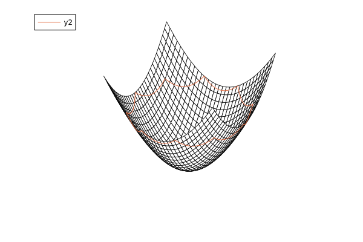
To just plot the points atop, we can just omit the geodesic_interpolation parameter to obtain a scatter plot. Note that we avoid redrawing the wireframe in the following plot! calls.
plot!(scene, M, pts; wireframe=false)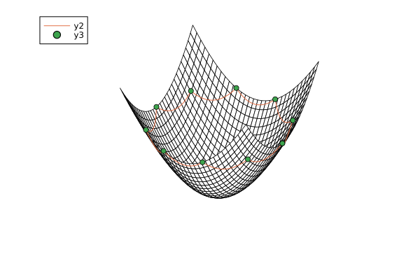
We can further generate tangent vectors in these spaces and use a plot for there. Keep in mind that a tangent vector in plotting always requires its base point.
pts2 = [ [0.45 .*cos(φ + 6π/11), 0.45 .*sin(φ + 6π/11), sqrt(0.45^2+1) ] for φ ∈ range(0,2π,length=11)]vecs = log.(Ref(M),pts,pts2)plot!(scene, M, pts, vecs; wireframe=false)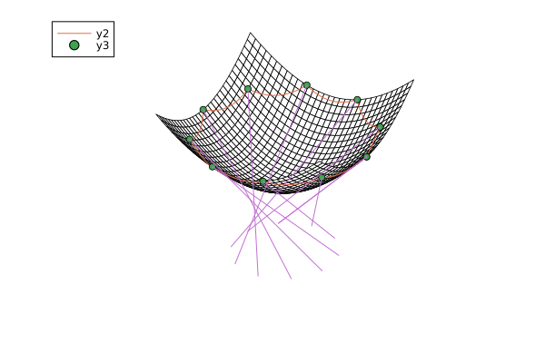
Just to illustrate, for the first point the tangent vector is pointing along the following geodesic
plot!(scene, M, [pts[1], pts2[1]]; geodesic_interpolation=100, wireframe=false)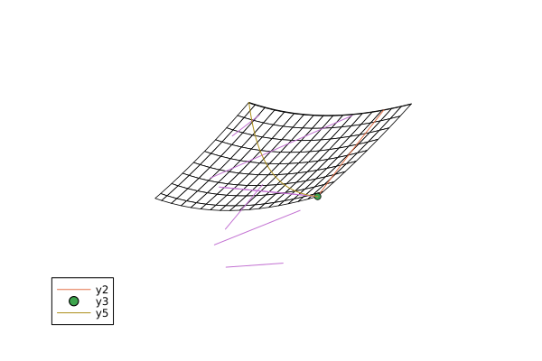
Internal functions
The following functions are available for internal use to construct points in the hyperboloid model
Manifolds._hyperbolize — Method
_hyperbolize(M, p, Y)Lift a vector $Y ∈ ℝ^n$ into the tangent space at p of the Hyperbolic(n) manifold in the hyperboloid model. This is done by computing the last component such that for the resulting X the minkowski_metric is $⟨p,X⟩_{\mathrm{M}} = 0$, i.e. $X_{n+1} = \frac{⟨\tilde p, Y⟩}{p_{n+1}}$, where $\tilde p = (p_1,\ldots,p_n)$.
Manifolds._hyperbolize — Method
_hyperbolize(M, q)Lift a point $q ∈ ℝ^n$ onto the Hyperbolic(n) manifold in the hyperboloid model. This is done by computing the last component such that for the resulting p the minkowski_metric is $⟨p,p⟩_{\mathrm{M}} = - 1$, i.e. $p_{n+1} = \sqrt{\lVert q \rVert^2 + 1}$.
Poincaré ball model
Base.convert — Method
convert(::Type{PoincareBallPoint}, p::HyperboloidPoint)
convert(::Type{PoincareBallPoint}, p::T) where {T<:AbstractVector}convert a HyperboloidPoint $p∈ℝ^{n+1}$ from the hyperboloid model of the Hyperbolic manifold $\mathcal H^n$ to a PoincareBallPoint $π(p)∈ℝ^{n}$ in the Poincaré ball model. The isometry is defined by
\[π(p) = \frac{1}{1+p_{n+1}} \begin{pmatrix}p_1\\⋮\\p_n\end{pmatrix}\]
Note that this is also used, when x is a vector.
Base.convert — Method
convert(::Type{PoincareBallPoint}, p::PoincareHalfSpacePoint)convert a point PoincareHalfSpacePoint p (from $ℝ^n$) from the Poincaré half plane model of the Hyperbolic manifold $\mathcal H^n$ to a PoincareBallPoint $π(p) ∈ ℝ^n$. Denote by $\tilde p = (p_1,\ldots,p_{d-1})^{\mathrm{T}}$. Then the isometry is defined by
\[π(p) = \frac{1}{\lVert \tilde p \rVert^2 + (p_n+1)^2} \begin{pmatrix}2p_1\\⋮\\2p_{n-1}\\\lVert p\rVert^2 - 1\end{pmatrix}.\]
Base.convert — Method
convert(::Type{PoincareBallTangentVector}, p::HyperboloidPoint, X::HyperboloidTangentVector)
convert(::Type{PoincareBallTangentVector}, p::P, X::T) where {P<:AbstractVector, T<:AbstractVector}Convert a HyperboloidTangentVector X at p to a PoincareBallTangentVector on the Hyperbolic manifold $\mathcal H^n$. This computes the push forward $π_*(p)[X]$ of the isometry $π$ that maps from the Hyperboloid to the Poincaré ball, cf. convert(::Type{PoincareBallPoint}, ::HyperboloidPoint).
The formula reads
\[π_*(p)[X] = \frac{1}{p_{n+1}+1}\Bigl(\tilde X - \frac{X_{n+1}}{p_{n+1}+1}\tilde p \Bigl),\]
where $\tilde X = \begin{pmatrix}X_1\\⋮\\X_n\end{pmatrix}$ and $\tilde p = \begin{pmatrix}p_1\\⋮\\p_n\end{pmatrix}$.
Base.convert — Method
convert(
::Type{PoincareBallTangentVector},
p::PoincareHalfSpacePoint,
X::PoincareHalfSpaceTangentVector
)Convert a PoincareHalfSpaceTangentVector X at p to a PoincareBallTangentVector on the Hyperbolic manifold $\mathcal H^n$. This computes the push forward $π_*(p)[X]$ of the isometry $π$ that maps from the Poincaré half space to the Poincaré ball, cf. convert(::Type{PoincareBallPoint}, ::PoincareHalfSpacePoint).
The formula reads
\[π_*(p)[X] = \frac{1}{\lVert \tilde p\rVert^2 + (1+p_n)^2} \begin{pmatrix} 2X_1\\ ⋮\\ 2X_{n-1}\\ 2⟨X,p⟩ \end{pmatrix} - \frac{2}{(\lVert \tilde p\rVert^2 + (1+p_n)^2)^2} \begin{pmatrix} 2p_1(⟨X,p⟩+X_n)\\ ⋮\\ 2p_{n-1}(⟨X,p⟩+X_n)\\ (\lVert p \rVert^2-1)(⟨X,p⟩+X_n) \end{pmatrix}\]
where $\tilde p = \begin{pmatrix}p_1\\⋮\\p_{n-1}\end{pmatrix}$.
Base.convert — Method
convert(
::Type{Tuple{PoincareBallPoint,PoincareBallTangentVector}},
(p,X)::Tuple{HyperboloidPoint,HyperboloidTangentVector}
)
convert(
::Type{Tuple{PoincareBallPoint,PoincareBallTangentVector}},
(p, X)::Tuple{P,T},
) where {P<:AbstractVector, T <: AbstractVector}Convert a HyperboloidPoint p and a HyperboloidTangentVector X to a PoincareBallPoint and a PoincareBallTangentVector simultaneously. See convert(::Type{PoincareBallPoint}, ::HyperboloidPoint) and convert(::Type{PoincareBallTangentVector}, ::HyperboloidPoint, ::HyperboloidTangentVector) for the formulae.
Base.convert — Method
convert(
::Type{Tuple{PoincareBallPoint,PoincareBallTangentVector}},
(p,X)::Tuple{HyperboloidPoint,HyperboloidTangentVector}
)
convert(
::Type{Tuple{PoincareBallPoint,PoincareBallTangentVector}},
(p, X)::Tuple{T,T},
) where {T <: AbstractVector}Convert a PoincareHalfSpacePoint p and a PoincareHalfSpaceTangentVector X to a PoincareBallPoint and a PoincareBallTangentVector simultaneously. See convert(::Type{PoincareBallPoint}, ::PoincareHalfSpacePoint) and convert(::Type{PoincareBallTangentVector}, ::PoincareHalfSpacePoint, ::PoincareHalfSpaceTangentVector) for the formulae.
ManifoldsBase.change_metric — Method
change_metric(M::Hyperbolic, ::EuclideanMetric, p::PoincareBallPoint, X::PoincareBallTangentVector)Since in the metric we always have the term $α = \frac{2}{1-\sum_{i=1}^n p_i^2}$ per element, the correction for the metric reads $Z = \frac{1}{α}X$.
ManifoldsBase.change_representer — Method
change_representer(M::Hyperbolic, ::EuclideanMetric, p::PoincareBallPoint, X::PoincareBallTangentVector)Since in the metric we have the term $α = \frac{2}{1-\sum_{i=1}^n p_i^2}$ per element, the correction for the gradient reads $Y = \frac{1}{α^2}X$.
ManifoldsBase.distance — Method
distance(::Hyperbolic, p::PoincareBallPoint, q::PoincareBallPoint)Compute the distance on the Hyperbolic manifold $\mathcal H^n$ represented in the Poincaré ball model. The formula reads
\[d_{\mathcal H^n}(p,q) = \operatorname{acosh}\Bigl( 1 + \frac{2\lVert p - q \rVert^2}{(1-\lVert p\rVert^2)(1-\lVert q\rVert^2)} \Bigr)\]
ManifoldsBase.inner — Method
inner(::Hyperbolic, p::PoincareBallPoint, X::PoincareBallTangentVector, Y::PoincareBallTangentVector)Compute the inner product in the Poincaré ball model. The formula reads
\[g_p(X,Y) = \frac{4}{(1-\lVert p \rVert^2)^2} ⟨X, Y⟩ .\]
ManifoldsBase.project — Method
project(::Hyperbolic, ::PoincareBallPoint, ::PoincareBallTangentVector)projection of tangent vectors in the Poincaré ball model is just the identity, since the tangent space consists of all $ℝ^n$.
Visualization of the Poincaré ball
For the case of Hyperbolic(2) there is a plotting available based on a PlottingRecipe you can easily plot points, connecting geodesics as well as tangent vectors.
The recipes are only loaded if Plots.jl or RecipesBase.jl is loaded.
If we consider a set of points, we can first plot these and their connecting geodesics using the geodesic_interpolation For the points. This variable specifies with how many points a geodesic between two successive points is sampled (per default it's -1, which deactivates geodesics) and the line style is set to be a path. Another keyword argument added is the border of the Poincaré disc, namely circle_points = 720 resolution of the drawn boundary (every hlaf angle) as well as its color, hyperbolic_border_color = RGBA(0.0, 0.0, 0.0, 1.0).
using Manifolds, PlotsM = Hyperbolic(2)pts = PoincareBallPoint.( [0.85 .* [cos(φ), sin(φ)] for φ ∈ range(0,2π,length=11)])scene = plot(M, pts, geodesic_interpolation = 100)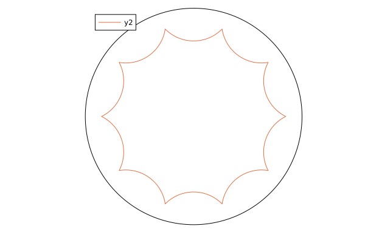
To just plot the points atop, we can just omit the geodesic_interpolation parameter to obtain a scatter plot
plot!(scene, M, pts)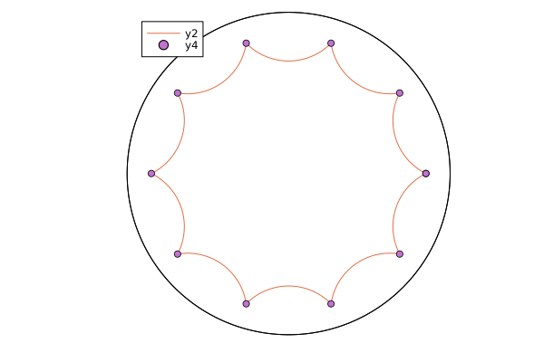
We can further generate tangent vectors in these spaces and use a plot for there. Keep in mind, that a tangent vector in plotting always requires its base point
pts2 = PoincareBallPoint.( [0.45 .* [cos(φ + 6π/11), sin(φ + 6π/11)] for φ ∈ range(0,2π,length=11)])vecs = log.(Ref(M),pts,pts2)plot!(scene, M, pts,vecs)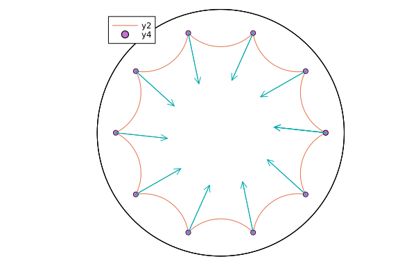
Just to illustrate, for the first point the tangent vector is pointing along the following geodesic
plot!(scene, M, [pts[1], pts2[1]], geodesic_interpolation=100)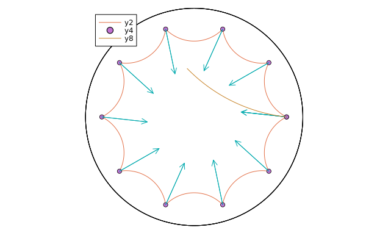
Poincaré half space model
Base.convert — Method
convert(::Type{PoincareHalfSpacePoint}, p::Hyperboloid)
convert(::Type{PoincareHalfSpacePoint}, p)convert a HyperboloidPoint or Vectorp (from $ℝ^{n+1}$) from the Hyperboloid model of the Hyperbolic manifold $\mathcal H^n$ to a PoincareHalfSpacePoint $π(x) ∈ ℝ^{n}$.
This is done in two steps, namely transforming it to a Poincare ball point and from there further on to a PoincareHalfSpacePoint point.
Base.convert — Method
convert(::Type{PoincareHalfSpacePoint}, p::PoincareBallPoint)convert a point PoincareBallPoint p (from $ℝ^n$) from the Poincaré ball model of the Hyperbolic manifold $\mathcal H^n$ to a PoincareHalfSpacePoint $π(p) ∈ ℝ^n$. Denote by $\tilde p = (p_1,\ldots,p_{n-1})$. Then the isometry is defined by
\[π(p) = \frac{1}{\lVert \tilde p \rVert^2 - (p_n-1)^2} \begin{pmatrix}2p_1\\⋮\\2p_{n-1}\\1-\lVert p\rVert^2\end{pmatrix}.\]
Base.convert — Method
convert(::Type{PoincareHalfSpaceTangentVector}, p::HyperboloidPoint, ::HyperboloidTangentVector)
convert(::Type{PoincareHalfSpaceTangentVector}, p::P, X::T) where {P<:AbstractVector, T<:AbstractVector}Convert a HyperboloidTangentVector X at p to a PoincareHalfSpaceTangentVector on the Hyperbolic manifold $\mathcal H^n$. This computes the push forward $π_*(p)[X]$ of the isometry $π$ that maps from the Hyperboloid to the Poincaré half space, cf. convert(::Type{PoincareHalfSpacePoint}, ::HyperboloidPoint).
This is done similarly to the approach there, i.e. by using the Poincaré ball model as an intermediate step.
Base.convert — Method
convert(::Type{PoincareHalfSpaceTangentVector}, p::PoincareBallPoint, X::PoincareBallTangentVector)Convert a PoincareBallTangentVector X at p to a PoincareHalfSpaceTangentVector on the Hyperbolic manifold $\mathcal H^n$. This computes the push forward $π_*(p)[X]$ of the isometry $π$ that maps from the Poincaré ball to the Poincaré half space, cf. convert(::Type{PoincareHalfSpacePoint}, ::PoincareBallPoint).
The formula reads
\[π_*(p)[X] = \frac{1}{\lVert \tilde p\rVert^2 + (1-p_n)^2} \begin{pmatrix} 2X_1\\ ⋮\\ 2X_{n-1}\\ -2⟨X,p⟩ \end{pmatrix} - \frac{2}{(\lVert \tilde p\rVert^2 + (1-p_n)^2)^2} \begin{pmatrix} 2p_1(⟨X,p⟩-X_n)\\ ⋮\\ 2p_{n-1}(⟨X,p⟩-X_n)\\ (\lVert p \rVert^2-1)(⟨X,p⟩-X_n) \end{pmatrix}\]
where $\tilde p = \begin{pmatrix}p_1\\⋮\\p_{n-1}\end{pmatrix}$.
Base.convert — Method
convert(
::Type{Tuple{PoincareHalfSpacePoint,PoincareHalfSpaceTangentVector}},
(p,X)::Tuple{HyperboloidPoint,HyperboloidTangentVector}
)
convert(
::Type{Tuple{PoincareHalfSpacePoint,PoincareHalfSpaceTangentVector}},
(p, X)::Tuple{P,T},
) where {P<:AbstractVector, T <: AbstractVector}Convert a HyperboloidPoint p and a HyperboloidTangentVector X to a PoincareHalfSpacePoint and a PoincareHalfSpaceTangentVector simultaneously. See convert(::Type{PoincareHalfSpacePoint}, ::HyperboloidPoint) and convert(::Type{PoincareHalfSpaceTangentVector}, ::Tuple{HyperboloidPoint,HyperboloidTangentVector}) for the formulae.
Base.convert — Method
convert(
::Type{Tuple{PoincareHalfSpacePoint,PoincareHalfSpaceTangentVector}},
(p,X)::Tuple{PoincareBallPoint,PoincareBallTangentVector}
)Convert a PoincareBallPoint p and a PoincareBallTangentVector X to a PoincareHalfSpacePoint and a PoincareHalfSpaceTangentVector simultaneously. See convert(::Type{PoincareHalfSpacePoint}, ::PoincareBallPoint) and convert(::Type{PoincareHalfSpaceTangentVector}, ::PoincareBallPoint,::PoincareBallTangentVector) for the formulae.
ManifoldsBase.distance — Method
distance(::Hyperbolic, p::PoincareHalfSpacePoint, q::PoincareHalfSpacePoint)Compute the distance on the Hyperbolic manifold $\mathcal H^n$ represented in the Poincaré half space model. The formula reads
\[d_{\mathcal H^n}(p,q) = \operatorname{acosh}\Bigl( 1 + \frac{\lVert p - q \rVert^2}{2 p_n q_n} \Bigr)\]
ManifoldsBase.inner — Method
inner(
::Hyperbolic,
p::PoincareHalfSpacePoint,
X::PoincareHalfSpaceTangentVector,
Y::PoincareHalfSpaceTangentVector
)Compute the inner product in the Poincaré half space model. The formula reads
\[g_p(X,Y) = \frac{⟨X,Y⟩}{p_n^2}.\]
ManifoldsBase.project — Method
project(::Hyperbolic, ::PoincareHalfSpacePoint ::PoincareHalfSpaceTangentVector)projection of tangent vectors in the Poincaré half space model is just the identity, since the tangent space consists of all $ℝ^n$.
Visualization on the Poincaré half plane
For the case of Hyperbolic(2) there is a plotting available based on a PlottingRecipe you can easily plot points, connecting geodesics as well as tangent vectors.
The recipes are only loaded if Plots.jl or RecipesBase.jl is loaded.
We again have two different recipes, one for points, one for tangent vectors, where the first one again can be equipped with geodesics between the points. In the following example we generate 7 points on an ellipse in the Hyperboloid model.
using Manifolds, PlotsM = Hyperbolic(2)pre_pts = [2.0 .* [5.0*cos(φ), sin(φ)] for φ ∈ range(0,2π,length=7)]pts = convert.( Ref(PoincareHalfSpacePoint), Manifolds._hyperbolize.(Ref(M), pre_pts))scene = plot(M, pts, geodesic_interpolation = 100)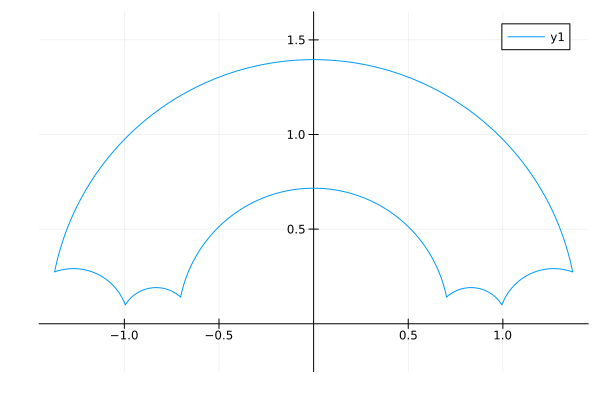
To just plot the points atop, we can just omit the geodesic_interpolation parameter to obtain a scatter plot
plot!(scene, M, pts)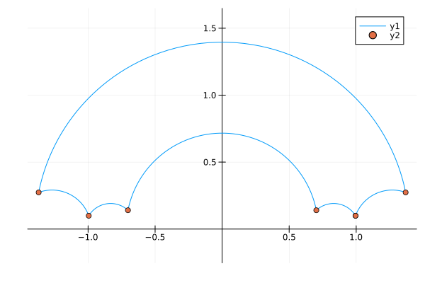
We can further generate tangent vectors in these spaces and use a plot for there. Keep in mind, that a tangent vector in plotting always requires its base point. Here we would like to look at the tangent vectors pointing to the origin
origin = PoincareHalfSpacePoint([0.0,1.0])vecs = [log(M,p,origin) for p ∈ pts]scene = plot!(scene, M, pts, vecs)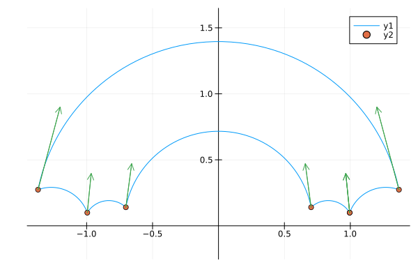
And we can again look at the corresponding geodesics, for example
plot!(scene, M, [pts[1], origin], geodesic_interpolation=100)plot!(scene, M, [pts[2], origin], geodesic_interpolation=100)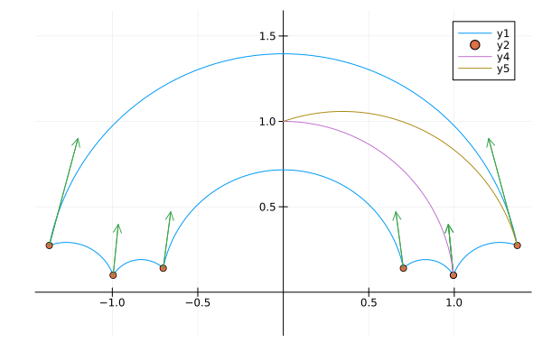
Literature
- [BPS15]
- R. Bergmann, J. Persch and G. Steidl. A parallel Douglas Rachford algorithm for minimizing ROF-like functionals on images with values in symmetric Hadamard manifolds, arXiv Preprint (2015), arXiv:1512.02814.
- [BPS16]
- R. Bergmann, J. Persch and G. Steidl. A parallel Douglas Rachford algorithm for minimizing ROF-like functionals on images with values in symmetric Hadamard manifolds. SIAM Journal on Imaging Sciences 9, 901–937 (2016).
- [CLLD22]
- E. Chevallier, D. Li, Y. Lu and D. B. Dunson. Exponential-wrapped distributions on symmetric spaces. ArXiv Preprint (2022).
- [Lee19]
- J. M. Lee. Introduction to Riemannian Manifolds (Springer Cham, 2019).
- [Ngu23]
- D. Nguyen. Operator-Valued Formulas for Riemannian Gradient and Hessian and Families of Tractable Metrics in Riemannian Optimization. Journal of Optimization Theory and Applications 198, 135–164 (2023), arXiv:2009.10159.